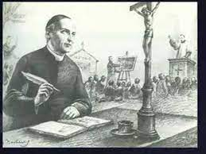
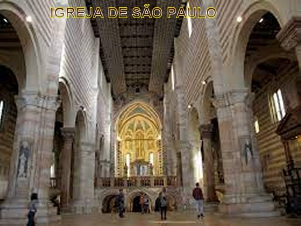
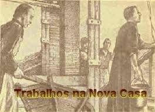
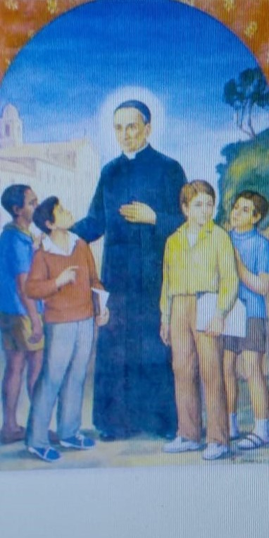

CRESCIMENTO DA FAMÍLIA RELIGIOSA
CRESCIMENTO DA FAMÍLIA RELIGIOSA
“FIEL AO DESEJO DIVINO”
DIRETOR ESPIRITUAL

Nesta atividade, junto aos seminaristas, ele elaborou um programa de formação que tinha como base a fidelidade plena ao Papa; naquela época até o Papa Pio VII foi feito prisioneiro por Napoleão. Na concepção de Padre Gaspar, a reforma da Igreja devia começar dentro dos seminários, fazendo com que os futuros Ministros do SENHOR se conscientizassem verdadeiramente dos valores evangélicos. De fato, o Seminário anteriormente passou por uma séria crise econômica e grave decadência moral, mas agora, assumiu a sua verdadeira função de formar sacerdotes, chegando a ser comparado por sua perfeita disciplina, a um Mosteiro.
PROBLEMAS COM A SAÚDE
Em maio de 1812 esteve à beira da morte devido a uma doença grave. Sarou quase por milagre, mas a debilidade física provocada pela enfermidade não o deixou mais até o fim da vida. Embora vivesse continuamente enfermo, deu exemplo de paciência heróica, entregando-se completamente nas mãos de DEUS.
Acamado e sofrendo terrivelmente, ainda assim foi conselheiro espiritual de muitas pessoas que o procuravam, entre as quais se destacam o Beato Carlos Steeb, os Servos de Deus Padre Nicolau Mazza e Padre Antonio Prôvolo; estes três dirigiam instituições e obras de caridade. Muitas outras pessoas vinham de longe para pedir os seus conselhos.

INVASÃO AUSTRÍACA
Em 1814, os austríacos invadiram Verona e venceram os franceses, assumindo o governo local. De certa forma isto foi benéfico, porque os austríacos não colocaram dificuldades aos cristãos, e assim, aos poucos, foi sendo liberadas as atividades religiosas, inclusive o funcionamento dos “Oratórios Marianos”, que estavam paralisados há anos.
O MOSTEIRO REJUVENESCIDO
Em 1815, o historiador Sommacampagna escreveu: “Hoje, o Seminário é um Mosteiro de monges mais que de jovens eclesiásticos, pois está tão evidente a transformação, que de modo claro transparece a ordem, a disciplina e os ideais mais sublimes dos conselhos evangélicos”. Os jovens eclesiásticos se portavam com a dignidade de um sacerdote formado.
FESTA DE SÃO FIRMO
Em 1816, NOSSO SENHOR inspirou o Padre Gaspar a realizar a grande Festa Popular de São Firmo. Na realidade, essa foi mais uma iluminação Divina, com objetivo de delinear no pensamento dele, um caminho de defesa contra os abusados negociantes que ocultavam mercadorias, com o objetivo de elevar o preço de venda, como se houvesse escassez do produto. Verona e outras regiões da Itália e da Europa sofriam com esse problema. Para contornar o descontrole do abastecimento ou enfrentar a libertinagem pré-concebida de ocultação de produtos, as autoridades religiosas de Verona incentivaram as Missões Populares para socorrer o povo. Na Paróquia de São Firmo, as missões tiveram por dirigente o valoroso missionário, Cônego Luigi Pacífico Pacetti e como digno auxiliar, Padre Gaspar Bertoni. As missões duraram do dia 4 de Maio ao dia 25. Mas, todavia, os trabalhos dos dois pregadores não foram tão tranquilos, encontraram dificuldades tão fortes que pareciam emanar do inferno: fuxicos e falatórios de pessoas malévolas que pregavam o maior ódio contra as missões. Mas os dois Padres Missionários insistiram na pregação, colocando em evidencia as verdades teológicas. A providência surtiu o melhor efeito, calando e fazendo desaparecer os elementos enviados por satanás. O abastecimento ao longo dos dias, gradativamente foi voltando à normalidade. Uma vitória da sensatez, do direito e do Verdadeiro Amor ensinado por JESUS.
FUNDAÇÃO DE UMA CONGREGAÇÃO RELIGIOSA

SEMPRE PENSANDO NA CONGREGAÇÃO
Desde os seus primeiros
pensamentos sobre a Congregação, Padre Gaspar deixou escrito, em seus
apontamentos, um trecho datado de 1808, quando ele tinha 31 anos de idade, no
qual descreve ter recebido uma preciosa inspiração do Alto, com referência à
fundação de uma Congregação Religiosa. Padre Gaspar não se cansava de orar a
DEUS. Precisava entender bem claro se a Vontade Divina era, de fato, que ele
fundasse uma Congregação Religiosa. Um dia, DEUS respondeu-lhe através de uma
visão. O SENHOR fez com que ele compreendesse que verdadeiramente a SUA Vontade
Divina era que ele, Padre Gaspar, instituísse uma Congregação de Religiosos. 
Em 1816, já com a idéia de fundar uma Congregação, com maior frequência Padre Gaspar começou a reunir em sua casa sacerdotes e também alguns seminaristas, tomando como pretexto o estudo da Teologia. A turma inicial que se reunia com ele era formada por: Padre Mateus Farinati, Padre Caetano Allegri e Padre Giovanni Maria Marani, mais o seminarista Nicola Mazza. Com o tempo, surgiu no grupo mais um elemento: o seminarista Luís Bragato. Como os tempos eram bem difíceis, por causa das artimanhas da heresia chamada “Jansenismo”, eles se preparavam em tais reuniões para combater aquelas absurdas aberrações, as quais transtornavam e deixava irritados o povo, e até os sacerdotes. Por aceitação geral, o líder dos estudos era sempre Padre Gaspar. Estudavam com afinco os ensinamentos de Santo Tomás de Aquino, quanto à Teologia Dogmática; a doutrina prudente e suave de Santo Afonso de Ligório quanto à Teologia Moral, e também, aprofundavam os seus conhecimentos acerca da Sagrada Escritura através da literatura italiana, de que necessitavam para falar nos sermões e conferências, enfronhando-se nas riquezas literárias da obra de Dante Alighieri. Mas não se pense que tudo isso era fácil: isto porque as reuniões de pessoas eram proibidas. A policia desmantelava os grupos que encontrasse fazendo reuniões. Somente a intervenção do Bispo diante das autoridades, conseguia explicar e provar que aquelas reuniões só tinham motivos de estudo e não de política, e assim conseguia atenuar as suspeitas da polícia. As circunstâncias, portanto, não favoreciam de maneira alguma a intenção de Padre Gaspar, de fundar uma Congregação Religiosa. Os franceses tendo reassumido o poder em Verona, proibiram novamente as práticas e as sociedades religiosas. Todos os conventos foram fechados, e expulsos os religiosos, de modo que era proibido edificar uma nova congregação religiosa.
Todavia o ano de 1816 marcou uma mudança decisiva na vida de Padre Gaspar. No dia 4 de Novembro, ele e alguns companheiros decidiram se estabelecerem em um prédio que recebeu por doação, que logo foi destinado a servir de Escola, e, muito mais, porque na verdade, aquele prédio estava destinado a ser o berço da Congregação Religiosa que ele queria fundar. O prédio estava ao lado da Igreja de São Francisco de Assis. Foi nesta Igreja que ele propagou a devoção à Paixão e às Chagas de NOSSO SENHOR JESUS CRISTO. Então resultou que o povo passou a denominar os religiosos que ali residiam de "estigmatinos" e denominar o prédio onde moravam, de “Casa dos Estigmas”.
Padre Gaspar desenvolvendo o seu ideal, transformou a casa numa verdadeira Escola aberta aos filhos de gente simples; se empenhou trabalhando gratuitamente para a Igreja e para a sociedade. Juntamente com os companheiros da comunidade levou uma vida de penitência e de sacrifício, vivendo um projeto de vida espiritual fundamentado na contemplação e na ação apostólica. Este projeto englobava a educação da juventude, a formação do clero e a pregação missionária numa ampla disponibilidade a serviço dos Bispos.
MISSIONÁRIO APOSTÓLICO
Seguindo com seus projetos, aproveitando a mudança de governo, Padre Gaspar tentou reavivar a fé cristã no povo através da pregação de missões populares, atividade que encontrou oposição ferrenha por parte do governo austríaco. Contudo, ele continuou o Apostolado da Palavra, dedicando-se a Catequese. A 20 de Dezembro de 1817 o Papa Pio VII conferiu-lhe o título e as faculdades de "Missionário Apostólico".
CRESCIMENTO DA FAMÍLIA RELIGIOSA
Um mês mais tarde juntava-se ao pequeno grupo o Padre Michelangelo Gramego, que, com seu espírito jovial, foi o homem alegre “da nascente congregação”. No dia 10 de Janeiro de 1817 foi à vez de se apresentar o Padre Mateus Farinati, de temperamento mais calado, mas que “servia para tudo”. Em Outubro do mesmo ano a Providencia enviou outro Padre trabalhador e cheio de vida para a nascente comunidade: Padre Caetano Brugnoli, que era Arquiteto, e que por isso mesmo, se tornou precioso a Congregação, a fim de providenciar a restauração dos imóveis que estavam fechados há muito tempo. Em Outubro de 1818 juntou-se ainda ao pequeno grupo o Padre Luís Bragato, jovem sacerdote que se tornou o “filho predileto” de Padre Gaspar, por sua alegria e empenho nas orações, no atendimento aos necessitados e na vida da Comunidade Religiosa. No dia 14 de Março de 1822 entrou na Congregação dos Estigmas o Padre Francisco dos Condes Cartolari. Abandonando as riquezas e as comodidades da nobre família veronesa, da qual era o primogênito, especializou-se em Administração durante um ano e escolheu a pobreza dos Estigmas, fascinado pelo estilo de vida do Padre Gaspar. Ele era dotado de grande capacidade administrativa, mas preferia sempre os ofícios e trabalhos mais humildes, dizendo: “Este é o meu alimento preferencial!” O estilo de vida não mudou na Congregação com a recém chegada do Padre Francisco. O Irmão Zanolli continuou preparando os pratos vegetarianos caprichados, que o Padre Francisco com alegria e disposição saboreava com um claro sentido de gratidão.